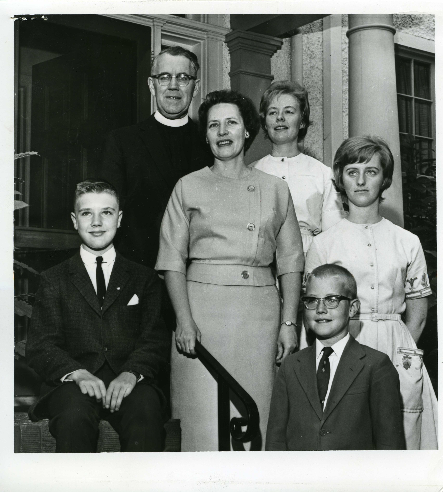

-1-MasterItem.svg)
Stories of Westminster United Church & its People / Page
208
Table
of Contents
which he left whole areas of work for me to do. He was
always available when I wanted (or needed) to consult with
him, but I never felt that he was peeking around the corner
to see what I was doing. I had work to do, and he left me to it:
the overall Christian education program, Sunday and mid-
week, work with new members and confirmation classes,
home and hospital visiting, and a limited amount of
preaching, except in the summer when I preached morning
and evening from the last Sunday in June to Labour Day
Sunday. In the summer, of course, I was in charge of all
the work of the church — Sunday services, weddings,
funerals, hospital visiting — the whole bit.
So, to return fourteen years later as senior minister gave
opportunity for much reminiscing about those three years
as assistant. The young people of the forties were now mature
adults, and as doctors and dentists and lawyers and housewives and teachers and
business leaders,
they were active in the church as elders and stewards and UCW presidents. As the
years moved
along, I was conducting the funerals of elderly parishioners whom I had first
known in the heyday
of their working years. Two young lads whom I had confirmed graduated in law and
were now
“on the bench.” Others had moved on in one profession or another, taking an active part in the
family business, or establishing their own. As I said, it was somewhat frightening to
return to
Westminster, but it turned out to be a most challenging and fulfilling — and lengthy — pastorate.
Our Next Four Ministers

Above: Dr. Reid Vipond and Mrs. Dorothy Vipond,
Douglas (13), Mary (20), Frances (17), and Bobby (10);
photo taken 5 July 1963.